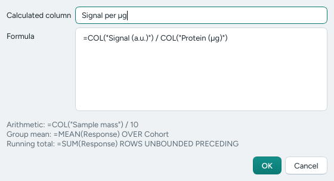
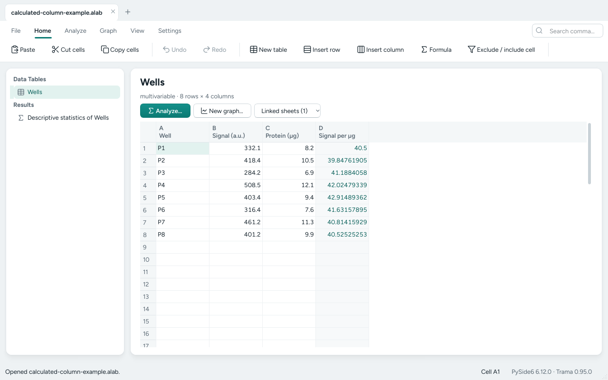

GuideData and formulasCalculated column
Create a calculated column
In eight wells you measured a signal and the amount of protein loaded. You want the signal per µg without copying numbers by hand, and you want the result to update if you correct a value.
- Checked on Trama 0.95.0 beta
- Data 8 synthetic wells
- Seed 5
- Reading 5 minutes
When to use it
A calculated column holds a formula that Trama applies row by row to the other columns of the same table. It does not copy numbers: if you change a source value, the result is recalculated, and the project stores the formula, not the values.
Use it to normalise to a reference quantity, convert units, or take differences or ratios between measurements in the same row. Before dividing, check one assumption:
- The signal is proportional to the reference. The signal/protein ratio makes sense if twice the protein gives twice the signal and the line passes through zero. If a background remains at zero protein, the ratio changes with the amount loaded and introduces an effect that is not there. In that case subtract the background first, or use protein as a covariate rather than a divisor.
- The units. The name of the new column should state the unit of the result, here “a.u. per µg”.
The data
A Multiple variables table with one row per well: Well (P1–P8), Signal (a.u.) and Protein (µg). The protein loaded ranges from 6.9 to 12.1 µg, so the raw signal varies mostly because of that.
In Trama
- Open the project with File → Open…, or import the CSV with File → Import into project… and add the formula yourself.
- Select the table Wells and, on the Home tab, press Formula.
- In Calculated column type the name of the new column,
Signal per µg. - In Formula type
=COL("Signal (a.u.)") / COL("Protein (µg)")and press OK. Trama tries the formula on the whole table before accepting it; if a column name is wrong, the error appears in the window. - To change it select a cell of the calculated column and press Formula again: the window opens with the current expression.

COL("…") is needed when the column name contains spaces or brackets. Other functions include ABS, SQRT, LN, LOG10, ROUND, IF and MEAN.
Read the result
The Signal per µg column appears to the right of the source columns, with its numbers in green to set it apart from data entered by hand.
Show the sheet with the calculated column

| Mean | Standard deviation | Coefficient of variation | |
|---|---|---|---|
| Signal (a.u.) | 390.7 | 75.8 | 19.4% |
| Signal per µg | 41.18 | 0.98 | 2.4% |
The variability between wells drops from 19.4% to 2.4%: almost all of it came from the amount of protein loaded. Mean and standard deviation come from Descriptive statistics, already in the project; the coefficient of variation is the standard deviation divided by the mean.
An excluded cell in a source column
Exclude the protein of well P3: select it and press Home → Exclude / include cell. The calculated cell for P3 becomes empty, because a ratio with an excluded value has no result. The calculated column is left with 7 values and the mean becomes 41.18 (41.1798 against 41.1808 with all eight).
This is the correct behaviour, but if you do not notice it you think you have eight wells and analyse seven. How to notice: the calculated column has an empty cell where the source columns have a number; in Descriptive statistics the N row reads 7 and Missing reads 1. To restore it, select the cell again and press the same command.
What to report
- The exact formula and the units of the result.
- Why the ratio is justified: proportionality and no background, or how the background was removed.
- Excluded cells and the number of values used.
- Trama version and the
.alabproject with the formula.
The signal of each well was divided by the amount of protein loaded with a calculated column in Trama 0.95.0 beta (formula
=COL("Signal (a.u.)") / COL("Protein (µg)")). Normalisation reduced the coefficient of variation between wells from 19.4% to 2.4% (n = 8).
Sources
- Curran-Everett D. (2013). Explorations in statistics: the analysis of ratios and normalized data. Advances in Physiology Education, 37(3), 213–219. doi:10.1152/advan.00053.2013
- Kronmal R. A. (1993). Spurious correlation and the fallacy of the ratio standard revisited. Journal of the Royal Statistical Society A, 156(3), 379–392. doi:10.2307/2983064
Checked with Trama 0.95.0 beta (tag v0.95.0, commit 4c07db6) on 20 November 2026. Formulas in analisi/data.py, window in trama_qt/formula.py.